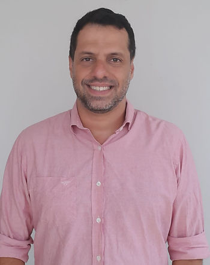
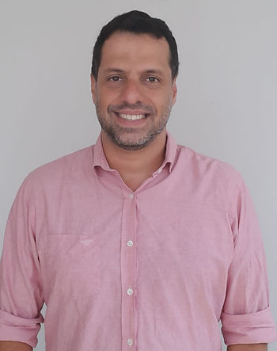

Desde quando você está na Associação?
Eu não lembro desde quando estou na associação, mas, acho, que a minha primeira participação em um evento da ABRAPESP, foi no Congresso ABRAPESP que aconteceu na UERJ, no Rio de Janeiro. Nele aconteceu o meu primeiro contato direto, e presencial, com a ABRAPESP e seus integrantes. Primeiro evento nacional, onde pude ter contato e conversar, sobre Psicologia do Esporte, com profissionais de outras regiões do país. Antes disso, os meus contatos eram restritos aos meus colegas de minha cidade e aos livros da área.
O que você buscava ao se associar?
Network e conhecimento. No começo, eu era muito sozinho na prática, conhecia poucas pessoas. Eu tenho uma história íntima com o esporte desde pequeno. O esporte apareceu na minha vida aos seis anos de idade para ajudar no tratamento da bronquite asmática e, anos depois, me tornei atleta. Quando entrei na faculdade de psicologia eu já tinha a Psicologia do Esporte em vista. Na época, eram poucos os lugares no Brasil que ofereciam cursos de formação na área e, no Rio de Janeiro, as universidades nunca conseguiam fechar turmas com um número mínimo de alunos. Por isso, a minha formação na área foi solitária. Logo, buscar a Associação, foi a maneira que tive para poder romper a bolha e ampliar os meus relacionamentos e conhecimento.
Como aconteceu de se tornar presidente?
Acho que foi a conjuntura, uma combinação de acontecimentos num mesmo período. Em 2013, eu já estava muito ativo no CRP-RJ. Eu era o responsável pela pauta e estava levando a discussão da Psicologia do Esporte para nível nacional, na APAF (Assembleia de Políticas, Administração e Finanças) do Sistema Conselhos de Psicologia. Lá, constituímos o Grupo de Trabalho (GT), nacional, de Psicologia e Esporte. Assim, somando: a criação do GT nacional e, eu, subsequentemente, fazendo parte dele; a Copa do Mundo de futebol masculino no Brasil e; os Jogos Olímpicos e Paralímpicos no Rio de Janeiro (cidade que resido), se formou um cenário propício para presidir a ABRAPESP no biênio 2016/2017.
Quais foram seus pontos de atenção durante o seu mandato?
Antes de assumir eu tinha dois focos principais:
– ampliar a discussão no Brasil, tentando participar o maior número de Estados, pois, naquele período, as principais discussões estavam concentradas nos eixos Rio-São Paulo e Sudeste-Sul. Ampliando a discussão, passaríamos a conhecer mais, e daríamos mais visibilidade, aos profissionais e às práticas que das regiões Centro-Oeste, Nordeste e Norte.
– aproveitar a Copa do Mundo de Futebol masculino no Brasil e os Jogos Olímpicos e Paralímpicos na cidade do Rio de Janeiro, para divulgar a Psicologia, enquanto ciência e profissão, como uma importante ferramenta no contexto do esporte, e apresentar o esporte e atividade física, como uma ferramenta para o desenvolvimento da saúde mental.
O desejo de ampliar a discussão era tão grande, que tínhamos na gestão, pelo menos, representantes de treze Estados brasileiros.
Mas, quando a gestão começou, nada foi como eu imaginava. Comecei a gestão me sentindo muito pressionado. Senti o peso de: estar sendo o primeiro presidente de fora do Estado de São Paulo; ser o primeiro homem a presidir a instituição; a ABRAPESP estar completando 10 anos e; estar em pleno Jogos Olímpicos, na minha cidade. E, para completar, eu continuava sendo Conselheiro-Diretor do CRP-RJ, e ainda precisava dar conta do meu trabalho diário, que é o meu ganha pão. Não foi fácil!
Logo… Não aguentei, adoeci. O bom é que teve muita gente que conseguiu enxergar que eu não estava bem e me ajudou a conduzir o processo. Isso é uma coisa legal que eu tiro dessa gestão. Essas pessoas deixaram de ser simples colegas de trabalho, elas se tornaram parceiras e amigas.
Outra coisa, quando a gente assume a gestão de uma associação, percebemos o quanto os processos burocráticos são grandes e importantes para se garantir a institucionalidade e a transparência das ações. A preocupação com a saúde financeira e com os atos legais, e administrativos eram grandes. Então boa parte da gestão foi fazendo conta, para tentar garantir o pagamento das contas, além das questões administrativas e interpessoais. Acho que até hoje, em qualquer Associação, as pessoas passam mais tempo atentas e preocupadas em manter a associação viva, do que nas atividades “sociais”. Bem, essa é uma realidade que atravessa muitas associações. Para muitos gestores o trabalho de gerir a associação, não é a atividade principal. Além de ser “secundária”, muitas vezes o tempo de dedicação ao trabalho acontece em horários não comerciais.
O que a gente conseguiu fazer foi responder às demandas que surgiam, principalmente da mídia. Foi um momento de colocar a associação na mídia, de apresentar mais a Psicologia do Esporte para a sociedade, para as outras áreas, para outras profissões e para os nossos colegas de profissão, em particular. Foi um ano para divulgar a área e isso foi muito bacana. Tive a oportunidade de conversar com representantes de muitos Estados, de apresentar a temática para os Conselhos Regionais que ainda não tinham a discussão e fazer com que instituíssem núcleos ou grupos de trabalho sobre a temática.
Então, com o objetivo de ampliar a discussão no território nacional, a gente conseguiu alcançar. Não chegamos no Brasil inteiro, mas conseguimos ampliar bem. Apresentar a psicologia enquanto ciência e profissão para as outras áreas, mostrar que a psicologia é importante para o esporte e que o esporte é importante para a saúde mental, conseguimos, também.
Você destacaria o trabalho conjunto com algum(s) colega(s) nesse período? Conte-nos um pouco.
Muitas pessoas se aproximaram para me ajudar, mas vou destacar uma pessoa, em especial, que foi super importante nesse período e, particularmente, para mim: a Gislaine, nossa vice-presidente. Ela chegou junto, conversou, trocou ideia e fez a coisa acontecer. O VI Congresso ABRAPESP ficou sob sua batuta, com o apoio do seu grupo de pesquisa. Não será possível destacar toda(o)s colegas de gestão que me ajudaram, sou grato a todos, mas, dentro de todas essas pessoas, reconheço a Gislane, nossa vice-presidente, como peça fundamental de nossa gestão.
Em quê o cargo de presidente te desafiou (profissional e pessoalmente)?
O desafio começou com o convite à presidência. Dar o “sim” nunca é simples, o amadurecimento já começa aí. Ao pensar em termos profissionais, penso que não dá para dizer que é um trabalho profissional, vejo que o cargo de gestão de uma associação, muitas vezes é um cargo “amador”, é uma balança, onde o prato da paixão é o mais pesado. A gente faz porque gosta, porque é apaixonado pela temática, não é o nosso trabalho principal. Um dos grandes desafios é esse, pois a sociedade e os associados exigem cada vez mais profissionalismo da gestão.
Sempre digo: entendo que uma Associação, como a nossa, não deve ser um clube de benefícios. A Associação tem um papel de união, de congregar. Um espaço de parcerias, de pessoas com a mesma ideia, a de querer ver a área progredir se desenvolver e de nos desenvolver juntos, enquanto profissionais. A gente faz isso por paixão, com “amadorismo” mesmo.
Ter uma dosagem de paciência, tolerância e compreensão do todo, sem se sentir pressionado pelas exigências de ser um gestor “profissional”, já é um desafio.
A minha ideia é de que a Associação é um ponto de encontro, talvez seja muito romântica. Entendo que os tempos mudaram e as cobranças, e as exigências aumentaram.
Lembro da primeira pergunta que me foi feita, quando eleito presidente. Foi de um estudante, durante a confraternização do Congresso, ele me perguntou: “Rodrigo, eu não sou associado à ABRAPESP, ainda não. Por que eu devo me tornar associado? Quais são os benefícios que vocês me oferecem?” Olhei para ele, olhei ao redor e apontei, todas aquelas pessoas conversando, trocando ideias, gargalhando e rindo, e respondi: “É isso aqui! É o contato, network, conhecer as pessoas e conseguir entrar na área. Aprender, conversar com os autores, com as pessoas todas, esse é o benefício da associação. Você entra para ter essa experiência, o contato, a socialização com quem estuda, com quem trabalha, com quem vive a área. Esse é o benefício”. Disse ele, que gostou da resposta.
Acho que essa é a finalidade de uma Associação!
Uma dica para as/os futura(o)s presidentes: respeite os processos institucionais e as pessoas. É preciso ser democrático, ético e político. Não esqueça de olhar pela sua saúde e trabalhe sempre em equipe.